Exploratory Data Analysis
This section evaluates workforce structure, variable distributions, class balance, correlation patterns, and multicollinearity to confirm that the synthetic HR dataset is analytically sound and ready for predictive modeling.
Introduction
Organizations increasingly rely on workforce data to inform decisions related to retention, performance, employee well-being, and organizational risk. In practice, however, access to real-world HR data is often limited by privacy concerns, governance requirements, and legal constraints.
This project addresses that challenge by using a research-informed synthetic dataset designed to reflect realistic organizational dynamics without exposing real employee information.
The purpose of this exploratory analysis is not only to summarize the dataset, but to demonstrate how workforce data can move through a full analytical pipeline: from structural validation and distributional assessment to relationship analysis and predictive readiness.
The analysis centers on three workforce outcomes that are especially relevant in modern organizational settings:
- Employee turnover intention
- Quiet quitting behavior
- Monitoring-related turnover risk
By combining labor-informed attributes, employee perception measures, behavioral indicators, and monitoring/privacy variables, this EDA establishes the empirical foundation for downstream predictive modeling.
Why This Analysis Matters
Workforce analytics can help organizations move from reactive people decisions to earlier, evidence-based intervention. Understanding how employee sentiment, behavioral strain, and workplace conditions interact is essential for reducing attrition risk and supporting healthier organizational performance.
Organizations that fail to monitor these patterns may face:
- Higher turnover costs
- Lower productivity
- Reduced employee trust
- Weaker engagement and retention outcomes
This analysis is especially important because it examines not only traditional HR constructs such as satisfaction and commitment, but also newer workplace concerns related to monitoring, privacy, and perceived intrusiveness.
The goal is to show how structured exploratory analysis can surface meaningful workforce patterns before model development begins, ensuring that later predictive results are grounded in realistic and interpretable data.
Exploratory Analysis Objectives
The goal of the exploratory data analysis phase is to evaluate whether the synthetic HR dataset is structurally sound, behaviorally realistic, and suitable for predictive modeling.
The analysis focuses on four objectives:
- Assess variable distributions across continuous, ordinal, and categorical employee measures to understand how workforce behaviors are spread across the dataset.
- Identify potential data quality concerns, including missing values, unusual distributional shapes, and extreme observations.
- Evaluate predictor relationships, with particular attention to correlation patterns and multicollinearity that may affect model stability.
- Examine imbalance and skewness, especially in workforce outcomes and behavioral measures, to inform resampling and modeling strategy.
Together, these steps validate the dataset and establish a clear link between exploratory diagnostics and downstream machine learning decisions.
Data Overview
The dataset used in this analysis is a synthetic workforce dataset informed by labor-market structure, organizational behavior research, and employee experience constructs commonly used in HR analytics.
It includes employee demographics, job context, engagement and satisfaction measures, mental health indicators, monitoring and privacy perceptions, and workforce outcome variables related to turnover and disengagement.
Rather than representing arbitrary synthetic values, the dataset was designed to preserve realistic variation and plausible relationships between employee characteristics, workplace experiences, and organizational risk outcomes.
These variables collectively support exploratory analysis of workforce behavior and provide the feature space for later predictive modeling of turnover intention, quiet quitting, and monitoring-related attrition risk.
Data Dictionary
The following metadata tables document the structure of the synthetic HR dataset.
Each variable is described according to:
- Variable name
- Data type
- Measurement level
- Modeling role (predictor, target, or excluded variable)
Documenting these attributes improves transparency and ensures reproducibility in later modeling stages.
1. Data & Demographics
| Variable | Type | Measurement | Purpose |
|---|---|---|---|
| Employee_ID | Character | Nominal | Identifier/Drop |
| First_Name | Character | Nominal | Identifier/Drop |
| Last_Name | Character | Nominal | Identifier/Drop |
| Occupation | Categorical | Nominal | Predictor |
| Department | Categorical | Nominal | Predictor |
| Average_Salary | Numeric | Ratio | Predictor |
| Tenure_Years | Numeric | Ratio | Predictor |
| Seniority | Categorical | Ordinal | Predictor |
| Work_Arrangement | Categorical | Nominal | Predictor |
| Distance_From_Home | Numeric | Ratio | Predictor |
| Age_Group | Categorical | Ordinal | Predictor |
| Gender | Categorical | Nominal | Predictor |
| Race | Categorical | Nominal | Predictor |
| Ethnicity | Categorical | Nominal | Predictor |
2. Metrics
| Variable | Type | Measurement | Purpose |
|---|---|---|---|
| Actual_Training_Hours | Numeric | Ratio | Predictor |
| Overtime_Hours | Numeric | Ratio | Predictor |
| Performance_Score | Numeric | Ordinal | Predictor |
| Productivity_Score | Numeric | Ordinal | Predictor |
| Discretionary_Effort | Numeric | Ordinal | Predictor |
| Engagement_Level | Numeric | Ordinal | Predictor |
| Organizational_Commitment | Numeric | Ordinal | Predictor |
| Role_Clarity | Numeric | Ordinal | Predictor |
3. Satisfaction
| Variable | Type | Measurement | Purpose |
|---|---|---|---|
| Job_Satisfaction | Numeric | Ordinal | Predictor |
| Workplace_Environment_Satisfaction | Numeric | Ordinal | Predictor |
| Work_Life_Balance_Satisfaction | Numeric | Ordinal | Predictor |
| Perceived_Organizational_Support | Numeric | Ordinal | Predictor |
| Relationship_With_Manager | Numeric | Ordinal | Predictor |
| Relationship_With_Coworkers | Numeric | Ordinal | Predictor |
| Team_Collaboration | Numeric | Ordinal | Predictor |
| Perceived_Career_Growth_Opportunities | Numeric | Ordinal | Predictor |
| Promotion_Opportunity | Numeric | Ordinal | Predictor |
| Learning_Opportunities | Numeric | Ordinal | Predictor |
| Manager_Support_Score | Numeric | Ordinal | Predictor |
| Perceived_Fairness_Score | Numeric | Ordinal | Predictor |
| Trust_In_Management | Numeric | Ordinal | Predictor |
| Job_Involvement | Numeric | Ordinal | Predictor |
| Recognition_Score | Numeric | Ordinal | Predictor |
| Voice_In_Decision_Making | Numeric | Ordinal | Predictor |
| Alignment_With_Mission | Numeric | Ordinal | Predictor |
| Manager_Communication_Quality | Numeric | Ordinal | Predictor |
| Feeling_Valued_At_Work | Numeric | Ordinal | Predictor |
4. Wellness
| Variable | Type | Measurement | Purpose |
|---|---|---|---|
| Burnout_Score | Numeric | Ordinal | Future Target |
| Wellbeing_Score | Numeric | Ordinal | Future Target |
| Anxiety_Level | Numeric | Ordinal | Predictor |
| Depression_Level | Numeric | Ordinal | Predictor |
| Stress_Level | Numeric | Ordinal | Predictor |
| Mental_Health_Days_Taken | Numeric | Ratio | Predictor |
| Absenteeism_Due_To_Mental_Health | Numeric | Ratio | Predictor |
| Access_To_Counseling | Categorical | Nominal | Predictor |
| Workload_Pressure | Numeric | Ordinal | Predictor |
| Coping_Skills | Numeric | Ordinal | Predictor |
| Peer_Support | Numeric | Ordinal | Predictor |
| Manager_Empathy | Numeric | Ordinal | Predictor |
| Leadership_Style | Categorical | Nominal | Predictor |
| Stressors_Experienced | Numeric | Ratio | Predictor |
5. Monitoring
| Variable | Type | Measurement | Purpose |
|---|---|---|---|
| Time_Tracking_Method_Used | Categorical | Nominal | Predictor |
| Surveillance_Method_Used | Categorical | Nominal | Predictor |
| Total_Monitoring_Tools | Numeric | Ratio | Predictor |
| Monitoring_Frequency | Numeric | Ordinal | Predictor |
| Monitoring_Intrusiveness | Numeric | Ordinal | Predictor |
| Monitoring_Productivity_Impact | Numeric | Ordinal | Predictor |
| Monitoring_Satisfaction_Impact | Numeric | Ordinal | Predictor |
| Violations_Logged_By_Monitoring_Software | Numeric | Ratio | Predictor |
| Perceived_Monitoring_Purpose | Categorical | Nominal | Predictor |
| AI_Supervision | Categorical | Nominal | Predictor |
6. Privacy
| Variable | Type | Measurement | Purpose |
|---|---|---|---|
| Monitoring_Transparency | Numeric | Ordinal | Predictor |
| Privacy_Concern_Score | Numeric | Ordinal | Target |
| Perceived_Intrusiveness | Numeric | Ordinal | Predictor |
| Trust_In_Monitoring | Numeric | Ordinal | Predictor |
| Privacy_Complaints_Score | Numeric | Ratio | Target |
7. Attrition
| Variable | Type | Measurement | Purpose |
|---|---|---|---|
| Turnover_Intention | Categorical | Nominal | Target |
| Voluntary_Resignation | Categorical | Nominal | Drop |
| Involuntary_Termination | Categorical | Nominal | Drop |
| Quiet_Quitting | Categorical | Nominal | Target |
| Employer_Promise_Broken | Numeric | Ordinal | Predictor |
| Internal_Job_Applications | Numeric | Ratio | Predictor |
| Promotion_Last_12_Months | Categorical | Nominal | Predictor |
| Monitoring_Turnover_Risk | Categorical | Nominal | Target |
Workforce Dataset Overview
This section provides a high-level summary of the workforce dataset used in the analysis. Understanding the scale and structure of the data is essential before exploring deeper relationships. The dataset was designed to reflect realistic organizational conditions, including a diverse set of employee attributes and behavioral indicators. These characteristics ensure the dataset is suitable for both exploratory analysis and predictive modeling.
Dataset Structure
Before performing statistical analysis, it is important to verify the structure and data types of each variable. This step ensures that variables are correctly formatted for modeling and helps identify potential data quality issues such as missing values. A clear understanding of variable types also informs appropriate visualization and transformation strategies.
Dataset Structure
| Variable | Type | Missing |
|---|---|---|
| occupation | factor | 0 |
| department | factor | 0 |
| average_salary | numeric | 0 |
| tenure_years | numeric | 0 |
| seniority | factor | 0 |
| work_arrangement | factor | 0 |
| distance_from_home | numeric | 0 |
| age_group | factor | 0 |
| gender | factor | 0 |
| race | factor | 0 |
| ethnicity | factor | 0 |
| actual_training_hours | numeric | 0 |
| overtime_hours | numeric | 0 |
| performance_score | numeric | 0 |
| productivity_score | numeric | 0 |
| discretionary_effort | numeric | 0 |
| engagement_level | numeric | 0 |
| organizational_commitment | numeric | 0 |
| role_clarity | numeric | 0 |
| job_satisfaction | numeric | 0 |
| workplace_environment_satisfaction | numeric | 0 |
| work_life_balance_satisfaction | numeric | 0 |
| perceived_organizational_support | numeric | 0 |
| relationship_with_manager | numeric | 0 |
| relationship_with_coworkers | numeric | 0 |
| team_collaboration | numeric | 0 |
| perceived_career_growth_opportunities | numeric | 0 |
| promotion_opportunity | numeric | 0 |
| learning_opportunities | numeric | 0 |
| manager_support_score | numeric | 0 |
| perceived_fairness_score | numeric | 0 |
| trust_in_management | numeric | 0 |
| job_involvement | numeric | 0 |
| recognition_score | numeric | 0 |
| voice_in_decision_making | numeric | 0 |
| alignment_with_mission | numeric | 0 |
| manager_communication_quality | numeric | 0 |
| feeling_valued_at_work | numeric | 0 |
| burnout_score | numeric | 0 |
| wellbeing_score | numeric | 0 |
| anxiety_level | numeric | 0 |
| depression_level | numeric | 0 |
| stress_level | numeric | 0 |
| mental_health_days_taken | numeric | 0 |
| absenteeism_due_to_mental_health | numeric | 0 |
| access_to_counseling | factor | 0 |
| workload_pressure | numeric | 0 |
| coping_skills | numeric | 0 |
| peer_support | numeric | 0 |
| manager_empathy | numeric | 0 |
| leadership_style | factor | 0 |
| stressors_experienced | numeric | 0 |
| time_tracking_method_used | factor | 0 |
| surveillance_method_used | factor | 0 |
| total_monitoring_tools | numeric | 0 |
| monitoring_frequency | numeric | 0 |
| monitoring_intrusiveness | numeric | 0 |
| monitoring_productivity_impact | numeric | 0 |
| monitoring_satisfaction_impact | numeric | 0 |
| violations_logged_by_monitoring_software | numeric | 0 |
| perceived_monitoring_purpose | factor | 0 |
| ai_supervision | factor | 0 |
| monitoring_transparency | numeric | 0 |
| privacy_concern_score | numeric | 0 |
| perceived_intrusiveness | numeric | 0 |
| trust_in_monitoring | numeric | 0 |
| privacy_complaints_score | numeric | 0 |
| turnover_intention | factor | 0 |
| quiet_quitting | factor | 0 |
| employer_promise_broken | numeric | 0 |
| internal_job_applications | numeric | 0 |
| promotion_last_12_months | factor | 0 |
| monitoring_turnover_risk | factor | 0 |
Dataset Summary Statistics
Summary statistics provide insight into the central tendency and variability of numeric variables within the dataset. These metrics help identify potential outliers, skewness, and unusual distributions that may influence modeling performance. Understanding these characteristics is critical for selecting appropriate modeling techniques and transformations.
Summary Statistics
| Variable | mean | sd | min | max | skew |
|---|---|---|---|---|---|
| average_salary | 97278.47 | 38088.60 | 38711.0 | 256358.0 | 1.04 |
| tenure_years | 2.93 | 3.37 | 0.1 | 19.7 | 2.41 |
| distance_from_home | 9.52 | 9.60 | 0.0 | 58.1 | 1.79 |
| actual_training_hours | 48.65 | 20.11 | 0.0 | 117.0 | -0.03 |
| overtime_hours | 51.68 | 41.17 | 0.0 | 199.0 | 1.32 |
| performance_score | 3.47 | 1.04 | 1.0 | 5.0 | -0.43 |
| productivity_score | 3.54 | 1.05 | 1.0 | 5.0 | -0.53 |
| discretionary_effort | 3.33 | 1.24 | 1.0 | 5.0 | -0.28 |
| engagement_level | 3.14 | 1.17 | 1.0 | 5.0 | -0.10 |
| organizational_commitment | 3.68 | 1.12 | 1.0 | 5.0 | -0.63 |
| role_clarity | 3.67 | 1.12 | 1.0 | 5.0 | -0.67 |
| job_satisfaction | 3.67 | 1.10 | 1.0 | 5.0 | -0.60 |
| workplace_environment_satisfaction | 3.14 | 1.20 | 1.0 | 5.0 | -0.07 |
| work_life_balance_satisfaction | 3.30 | 1.22 | 1.0 | 5.0 | -0.30 |
| perceived_organizational_support | 3.29 | 1.26 | 1.0 | 5.0 | -0.26 |
| relationship_with_manager | 3.72 | 1.16 | 1.0 | 5.0 | -0.72 |
| relationship_with_coworkers | 3.75 | 1.12 | 1.0 | 5.0 | -0.61 |
| team_collaboration | 3.68 | 1.08 | 1.0 | 5.0 | -0.60 |
| perceived_career_growth_opportunities | 3.14 | 1.13 | 1.0 | 5.0 | -0.06 |
| promotion_opportunity | 3.29 | 1.25 | 1.0 | 5.0 | -0.24 |
| learning_opportunities | 3.21 | 1.21 | 1.0 | 5.0 | -0.28 |
| manager_support_score | 3.60 | 1.12 | 1.0 | 5.0 | -0.45 |
| perceived_fairness_score | 3.31 | 1.20 | 1.0 | 5.0 | -0.29 |
| trust_in_management | 3.35 | 1.24 | 1.0 | 5.0 | -0.37 |
| job_involvement | 3.05 | 1.10 | 1.0 | 5.0 | -0.04 |
| recognition_score | 3.27 | 1.22 | 1.0 | 5.0 | -0.22 |
| voice_in_decision_making | 3.08 | 1.29 | 1.0 | 5.0 | -0.12 |
| alignment_with_mission | 3.16 | 1.20 | 1.0 | 5.0 | -0.17 |
| manager_communication_quality | 3.49 | 1.10 | 1.0 | 5.0 | -0.34 |
| feeling_valued_at_work | 3.28 | 1.14 | 1.0 | 5.0 | -0.33 |
| burnout_score | 4.14 | 1.54 | 1.0 | 7.0 | -0.09 |
| wellbeing_score | 4.65 | 1.36 | 1.0 | 7.0 | -0.45 |
| anxiety_level | 3.24 | 1.27 | 1.0 | 5.0 | -0.26 |
| depression_level | 3.16 | 1.20 | 1.0 | 5.0 | -0.07 |
| stress_level | 3.73 | 1.12 | 1.0 | 5.0 | -0.62 |
| mental_health_days_taken | 0.96 | 1.03 | 0.0 | 5.0 | 1.11 |
| absenteeism_due_to_mental_health | 1.54 | 1.45 | 0.0 | 10.0 | 1.21 |
| workload_pressure | 3.26 | 1.19 | 1.0 | 5.0 | -0.16 |
| coping_skills | 3.67 | 1.17 | 1.0 | 5.0 | -0.63 |
| peer_support | 3.57 | 1.11 | 1.0 | 5.0 | -0.43 |
| manager_empathy | 3.64 | 1.12 | 1.0 | 5.0 | -0.61 |
| stressors_experienced | 1.02 | 1.07 | 0.0 | 6.0 | 1.09 |
| total_monitoring_tools | 1.81 | 0.41 | 0.0 | 2.0 | -1.76 |
| monitoring_frequency | 3.06 | 1.13 | 1.0 | 5.0 | -0.12 |
| monitoring_intrusiveness | 3.66 | 1.10 | 1.0 | 5.0 | -0.66 |
| monitoring_productivity_impact | 2.77 | 1.25 | 1.0 | 5.0 | 0.22 |
| monitoring_satisfaction_impact | 3.04 | 1.25 | 1.0 | 5.0 | -0.01 |
| violations_logged_by_monitoring_software | 0.99 | 0.99 | 0.0 | 5.0 | 0.91 |
| monitoring_transparency | 3.35 | 1.21 | 1.0 | 5.0 | -0.36 |
| privacy_concern_score | 3.67 | 1.14 | 1.0 | 5.0 | -0.61 |
| perceived_intrusiveness | 3.55 | 1.20 | 1.0 | 5.0 | -0.43 |
| trust_in_monitoring | 3.43 | 1.24 | 1.0 | 5.0 | -0.46 |
| privacy_complaints_score | 0.45 | 0.71 | 0.0 | 4.0 | 1.66 |
| employer_promise_broken | 3.10 | 1.18 | 1.0 | 5.0 | -0.02 |
| internal_job_applications | 0.62 | 0.87 | 0.0 | 3.0 | 1.31 |
Variable Definitions
To support downstream analysis, variables are grouped into numeric predictors, categorical predictors, categorical targets, and numeric target-like outcome measures.
This grouping serves two purposes. First, it ensures that variables are explored using appropriate descriptive and graphical methods. Second, it supports later modeling workflows by distinguishing between predictors, outcomes, and variables that may require special treatment during preprocessing.
Variable Validation
This validation step confirms that all expected predictor and target variables are present in the merged dataset before exploratory analysis continues.
Performing this check early helps prevent silent downstream issues in visualization, feature engineering, and modeling by ensuring that the analytical dataset matches the intended project design.
Data Engineering & Preparation
Before exploratory analysis begins, the dataset must be checked for structural consistency and prepared for statistical use.
This preparation stage focuses on:
- Converting variables into appropriate analytical types
- Verifying that expected workforce attributes were successfully
merged
- Preserving target-variable level ordering for later classification
workflows
- Creating a reusable base dataset for self-contained analysis chunks
These steps do not materially alter the underlying workforce signals, but they ensure that later diagnostics and predictive models are built on a stable and reproducible analytical foundation.
Data Preprocessing
Character variables are converted to factor representations where appropriate so they can be handled correctly in categorical summaries, visualization, encoding workflows, and predictive modeling.
This preprocessing step also ensures consistency across self-contained chunks, which is especially important for a multi-section analytical report intended for reproducible site rendering.
Exploratory Workforce Analysis
This section examines the distributional behavior of the workforce dataset across continuous, ordinal, and categorical measures.
The aim is to identify:
- How employee values are distributed across key measures
- Which variables show strong skewness or concentration
- Where outliers may reflect meaningful employee subgroups
- Whether the observed patterns resemble realistic workforce behavior
These diagnostics provide the descriptive foundation for interpreting later correlation, stability, and target-relationship results.
Variable Type Classification
Before plotting, numeric variables are divided into likely continuous variables and Likert-style variables based on the number of distinct observed values.
This distinction matters because variables measured on a wide numeric scale are best interpreted through histograms and density plots, while ordinal response-style variables are more appropriately summarized with count-based displays.
Variable Classification
For exploratory purposes, variables are organized into four practical groups based on both measurement scale and analytical role:
- Continuous variables, such as salary, tenure,
distance, and workload-related measures
- Likert-style variables, which capture employee
perceptions, sentiment, support, and engagement
- Categorical variables, which describe workforce
composition and organizational context
- Target variables, which represent the key organizational outcomes modeled later in the project
This classification framework ensures that each variable group is explored using methods aligned with the type of signal it contains.
Continuous Variable Distributions
We use histogram and density plots to inspect the spread and shape of continuous variables.
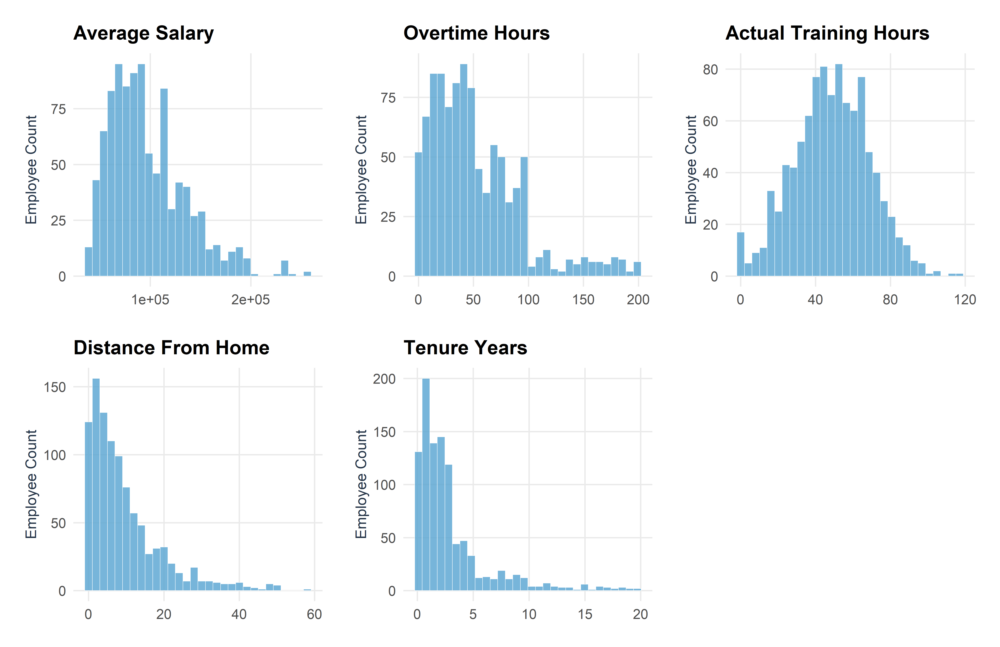
📊 Key Takeaways
Continuous workforce variables exhibit substantial variability, with most distributions showing clear right-skew rather than normal symmetry.
In particular, variables such as tenure years, overtime hours, and distance from home display heavy right tails, indicating that extreme values are concentrated among a smaller subset of employees.
Only a limited number of variables (e.g., training-related measures) approach a more symmetric distribution, suggesting that workforce behavior is not evenly distributed across employees.
These patterns reflect realistic organizational dynamics and support the use of robust or non-linear modeling approaches, particularly tree-based methods.
Likert Scale Variable Distributions
Likert-scale variables are plotted as bar charts to show the distribution of employee attitudes, perceptions, and satisfaction levels.
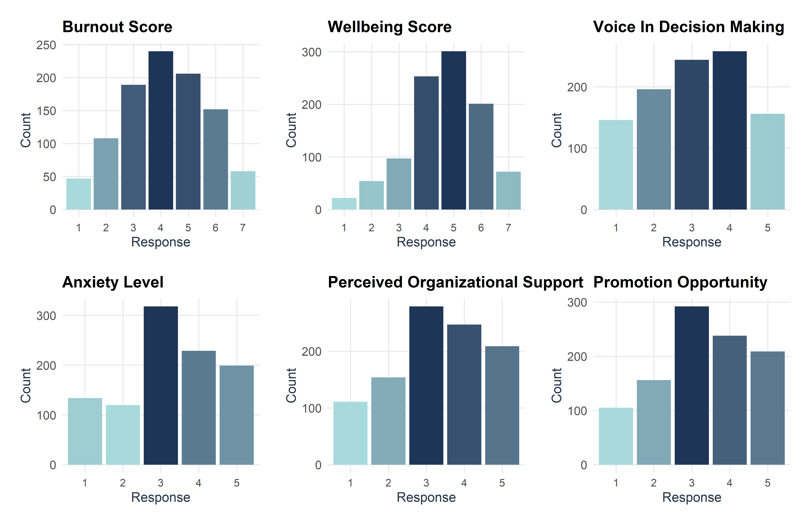
📊 Key Takeaways
Likert-scale variables show meaningful variation across response levels, with most distributions centered around mid-to-high values (3–5).
This indicates that employee perceptions are neither uniform nor extreme, but instead reflect a realistic spread of engagement, satisfaction, and organizational attitudes.
The presence of variation across these measures provides strong signal for predictive modeling, particularly for behavioral outcomes such as turnover and disengagement.
Outlier Detection
Outlier analysis helps distinguish between unusual observations that reflect realistic workforce variation and values that might indicate instability or distortion in the dataset.
In this context, the goal is not to eliminate extreme values automatically, but to determine whether concentrated high or low responses are plausible given the behavioral and survey-based nature of the variables.
Because many of the measures are ordinal and perception-driven, wider spread at certain response levels may represent meaningful employee segmentation rather than data problems.
Likert Variables (Outliers)
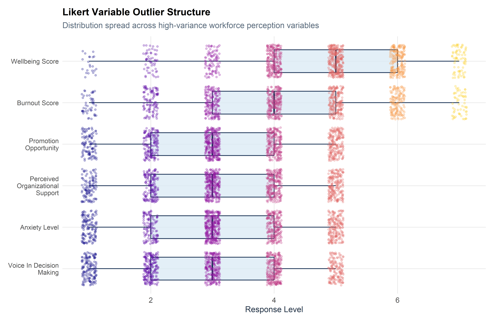
📊 Key Takeaways
Outlier patterns are present but remain within expected bounds for Likert-scale data, indicating natural variation rather than data quality issues.
Higher response levels (e.g., 5–7) show wider dispersion across several variables, suggesting that stronger employee perceptions are more variable than lower-level responses.
These patterns support the use of modeling approaches that can accommodate variability without requiring aggressive outlier treatment.
Workforce Relationship Analysis
This section evaluates how numeric workforce variables relate to one another and whether those relationships suggest meaningful behavioral structure or problematic redundancy.
The analysis focuses on two complementary views:
- The correlation matrix, which summarizes overall
pairwise relationships across numeric predictors
- The pairwise plot, which shows shape, spread, and visible patterns for selected high-variance variables
Together, these views help determine whether the dataset contains realistic clusters of related constructs while remaining stable enough for predictive modeling.
Correlation Matrix for Numeric Variables
The correlation matrix summarizes pairwise relationships among numeric variables and reorders them using hierarchical clustering to improve interpretability.
To reduce noise while preserving meaningful workforce signal, only correlations with an absolute value of at least |r| ≥ 0.10 are displayed. This makes it easier to identify behavioral clusters and localized relationships without overstating weak associations that are common in complex organizational systems.
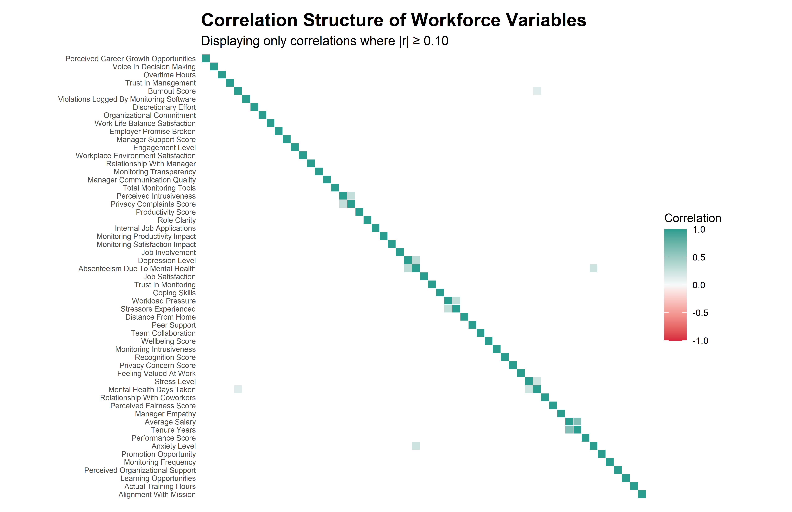
Interpreting Correlation Strength
Correlation coefficients describe the direction and magnitude of pairwise linear relationships. In workforce analytics, even relatively modest correlations can be meaningful because employee outcomes are rarely driven by a single dominant factor.
A practical interpretation framework for this analysis is:
- |r| ≈ 0.10 → weak but potentially meaningful relationship
- |r| ≈ 0.15–0.20 → small but consistent association
- |r| ≈ 0.25–0.35 → moderate relationship
- |r| ≥ 0.50 → comparatively strong relationship and possible multicollinearity concern
This threshold-based framing supports interpretation without exaggerating the importance of weak but realistic workforce signals.
📊 Key Takeaways
The correlation matrix indicates that most variables exhibit weak to moderate relationships, suggesting low overall multicollinearity and strong structural suitability for predictive modeling.
A limited number of meaningful relationships emerge. The most prominent is between tenure and salary, reflecting expected organizational progression patterns.
Clusters are also visible among mental health variables (stress, anxiety, burnout) and engagement-related measures, indicating that these constructs capture shared underlying dimensions of employee experience.
Monitoring and privacy-related variables show smaller but consistent associations, suggesting they contribute signal without dominating the feature space.
Overall, the correlation structure reflects a realistic workforce environment where outcomes are influenced by multiple interacting factors rather than a few dominant predictors.
Pairwise Relationship Exploration
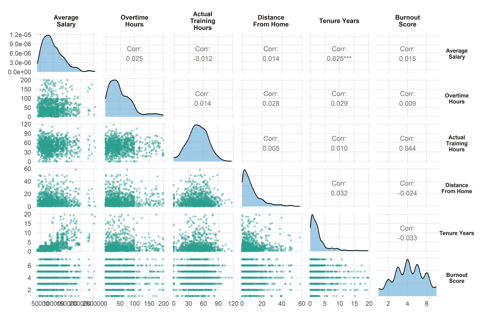
📊 Key Takeaways
The pairwise analysis provides additional context by revealing distribution shape and relationship patterns across key numeric variables.
The strongest visible relationship is between tenure and salary, where a clear upward trend confirms that compensation increases with organizational tenure.
Most other variable combinations show dispersed and non-linear patterns, indicating that relationships are complex and not well captured by simple linear assumptions.
Several variables—particularly behavioral and survey-based measures—display banded structures, reflecting their ordinal nature rather than continuous variation.
These findings suggest that flexible modeling approaches, such as tree-based methods, will be better suited to capturing workforce dynamics than strictly linear models.
Correlation Insights
The correlation results suggest that the dataset contains meaningful structure, but not excessive redundancy.
At higher thresholds, only a small number of relationships remain prominent, most notably the positive association between salary and tenure. This is consistent with expected workforce dynamics in which longer-tenured employees tend to earn more over time.
At more moderate thresholds, additional clustering appears among mental health and well-being measures, including stress, anxiety, depression, and absenteeism-related variables. These relationships suggest that the dataset captures coherent psychological and behavioral dimensions rather than isolated indicators.
Smaller but still interpretable relationships also emerge among monitoring and privacy-related variables, reinforcing the idea that these constructs contribute signal while remaining secondary to broader engagement and well-being patterns.
Taken together, the correlation structure reflects a realistic workforce system in which outcomes are shaped by several interacting dimensions rather than a handful of overpowering predictors.
Target Variable Exploration
This section examines the distribution of the three main workforce outcomes used in later modeling:
- Turnover intention
- Quiet quitting
- Monitoring-related turnover risk
The goal is to understand baseline prevalence, identify imbalance patterns, and assess whether the outcomes are sufficiently represented for reliable classification analysis.
These diagnostics help determine whether later model evaluation should emphasize metrics such as recall, F1 score, or specificity in addition to overall accuracy.
Target Variable Distributions
The following plots summarize the distribution of the three primary categorical outcomes in the dataset.
Examining these distributions before modeling is important because outcome imbalance can influence how models learn patterns and how performance should be interpreted.
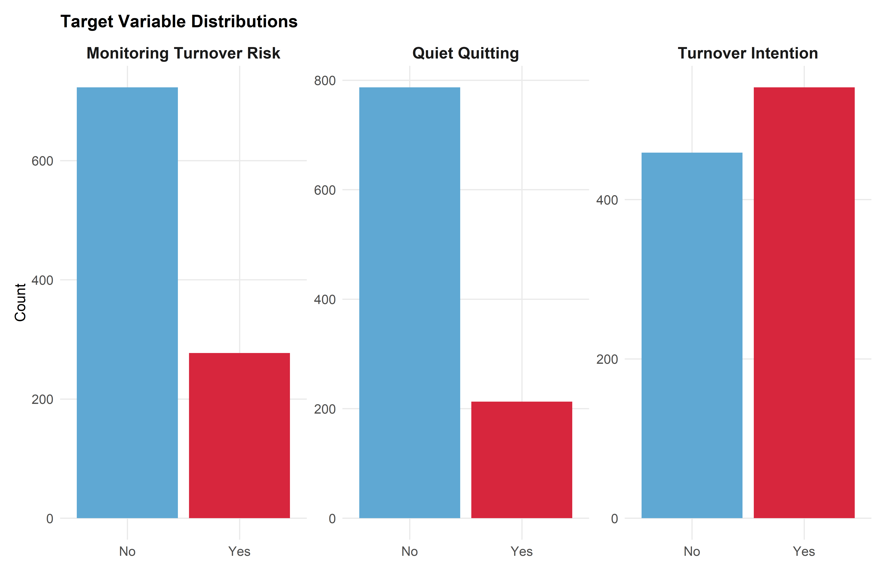
📊 Key Takeaways
Target variables show generally balanced distributions, particularly for turnover intention, supporting reliable classification modeling.
However, mild imbalance is present in outcomes such as quiet quitting and monitoring-related turnover risk, where "No" responses are more prevalent.
While not severe, these patterns suggest that evaluation metrics beyond accuracy (e.g., recall and F1-score) will be important during model assessment.
Target Versus Predictor Relationships
Before modeling, it is useful to examine whether key predictors show visible separation across outcome groups.
These density-based comparisons do not establish causality, but they do help identify variables that appear to shift meaningfully between employees with different workforce outcomes. This provides an early view of which behavioral and perceptual measures may be most informative for prediction.
Turnover Intention vs Key Predictors
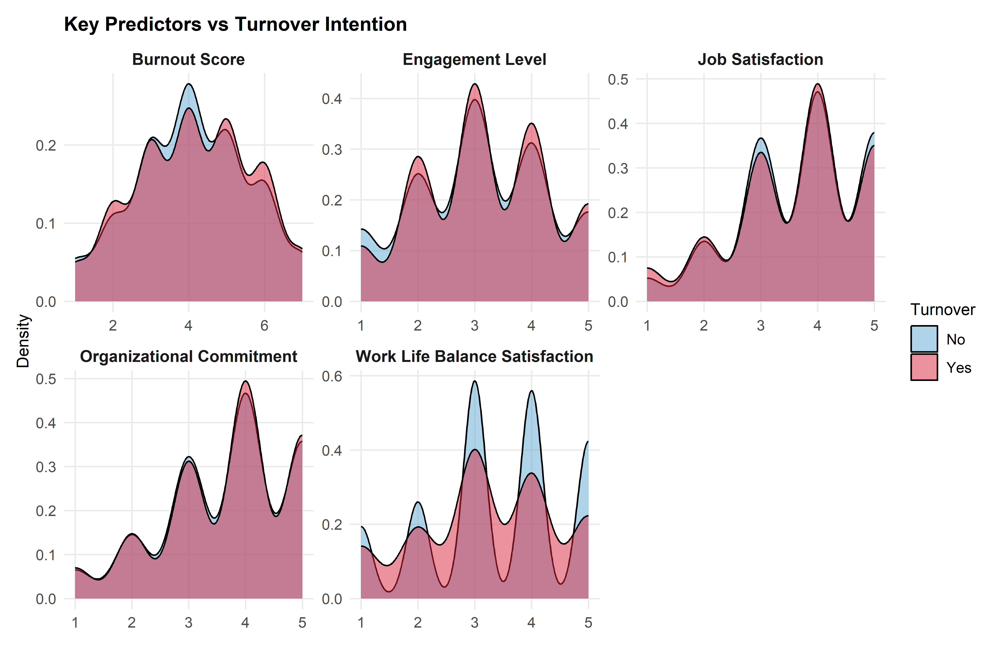
📊 Key Takeaways
Employees with higher burnout and lower job satisfaction show a clear shift toward higher turnover intention, indicating strong behavioral separation between outcome groups.
Engagement, work-life balance, and organizational commitment demonstrate consistent distributional differences, reinforcing their importance as key predictors of attrition risk.
These patterns suggest that turnover intention is strongly associated with both emotional strain and reduced organizational attachment.
Quiet Quitting Versus Key Predictors
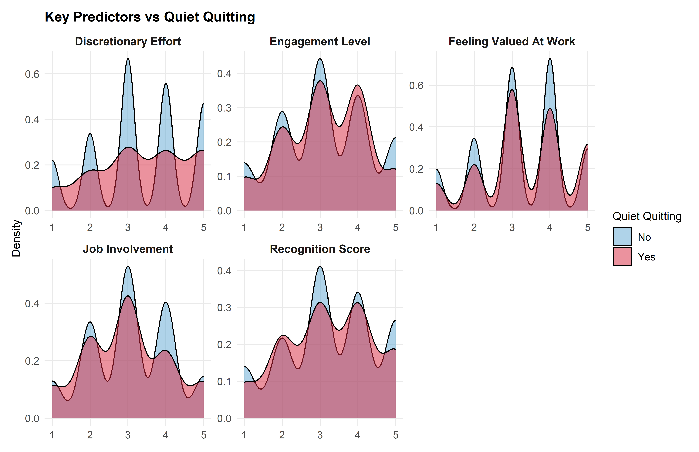
📊 Key Takeaways
Quiet quitting is strongly associated with reduced discretionary effort, lower engagement, and weaker perceptions of recognition and value.
These variables capture behavioral disengagement rather than formal attrition, making them critical indicators for early intervention.
Monitoring Risk Versus Key Predictors
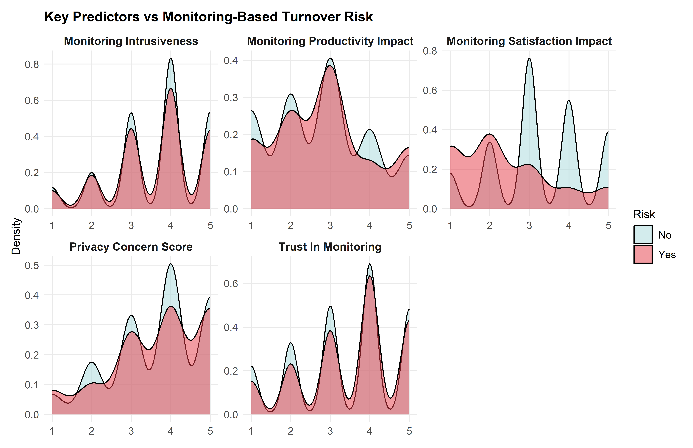
📊 Key Takeaways
Monitoring and privacy-related variables reveal clear behavioral differentiation across employees, particularly in how monitoring is perceived and its impact on satisfaction and productivity.
Higher levels of perceived intrusiveness and privacy concern tend to align with lower satisfaction-related distributions, suggesting that monitoring practices may negatively influence employee sentiment when perceived as excessive or invasive.
Conversely, measures such as trust in monitoring and perceived productivity impact display more balanced distributions, indicating that monitoring effects are not universally negative and may depend on implementation and communication.
These patterns highlight monitoring as a nuanced organizational factor that can either support or undermine workforce engagement depending on how it is experienced by employees.
Turnover Intention by Department
Department-level turnover rates help identify whether turnover intention is evenly distributed across the organization or concentrated within specific functional areas.
This view adds practical segmentation to the EDA by showing how turnover risk may differ across organizational contexts rather than only across individual-level predictors.
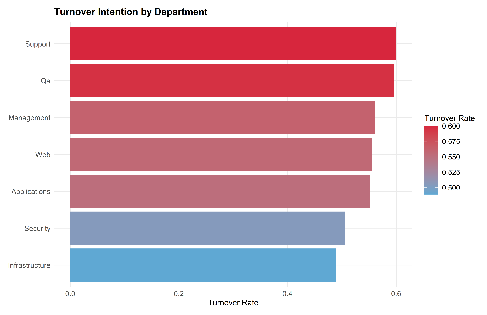
📊 Key Takeaways
- Support and QA departments show the highest turnover intention rates (~60%).
- Management, Web, and Applications fall into a mid-tier range (~55–57%).
- Infrastructure and Security demonstrate the lowest turnover intention (~50–52%).
- Operational and repetitive roles appear more vulnerable to disengagement.
- Specialized technical roles show relatively stronger retention patterns.
Model Stability Diagnostics
Variance Inflation Factor (VIF) analysis is used to assess whether predictors contain overlapping linear signal that could reduce model stability or interpretability.
The diagnostics are separated into:
- Numeric predictors
- Categorical predictors after dummy encoding
This allows the analysis to distinguish between continuous overlap and redundancy introduced through categorical expansion.
VIF for Numeric Predictors
This diagnostic evaluates whether numeric predictors contribute largely independent information or whether some variables are redundant enough to inflate variance in model estimation.
Given the modest correlation structure observed earlier, the expectation is that numeric multicollinearity will remain limited.
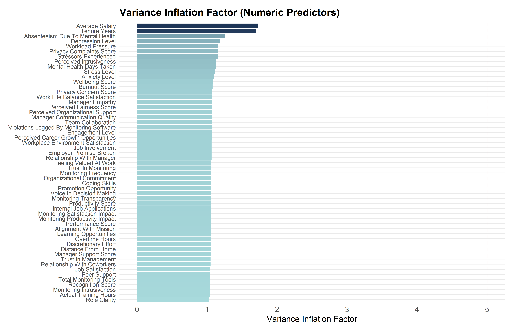
📊 Key Takeaways
Most numeric predictors fall within acceptable VIF thresholds, indicating limited multicollinearity concerns.
A small number of variables show moderate inflation, which may reflect overlapping constructs rather than true redundancy. These variables should be monitored but do not currently require removal.
VIF for Categorical Predictors
Categorical multicollinearity is assessed after dummy encoding factor variables into indicator columns.
This step is especially important because redundancy can arise not only from conceptual overlap between variables, but also from the way multiple levels of the same categorical construct are represented.
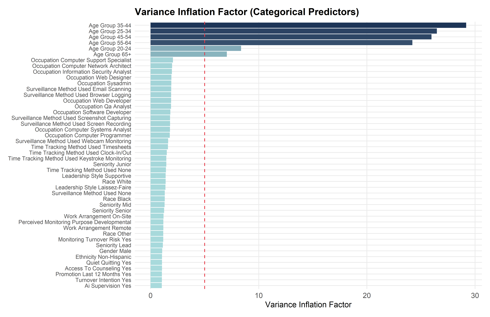
📊 Key Takeaways
Categorical multicollinearity was driven primarily by the detailed age-group encoding, where multiple dummy variables represented closely related levels of the same underlying construct.
After collapsing age groups into broader career-stage categories, VIF values improved substantially, indicating better structural stability and less redundancy among categorical predictors.
This adjustment preserves the meaning of age-related workforce patterns while making the categorical feature space more suitable for downstream predictive modeling.
Addressing Age Group Multicollinearity
The categorical VIF results indicate that the original age-group encoding introduces unnecessary redundancy across several dummy variables.
This is expected when multiple mutually exclusive levels of a single ordered construct are encoded in detail. To reduce that redundancy while preserving analytical meaning, the original age groups are collapsed into broader career-stage categories:
- Early-Career
- Mid-Career
- Senior-Career
This simplifies the age structure, improves model stability, and retains the substantive workforce interpretation of age-related differences.
Updated Categorical VIF Check
After collapsing age into broader career stages, categorical multicollinearity is recalculated to verify that the feature space is more stable and less redundant.
This second check confirms whether the adjustment resolves the earlier inflation without removing the workforce signal contributed by age-related structure.
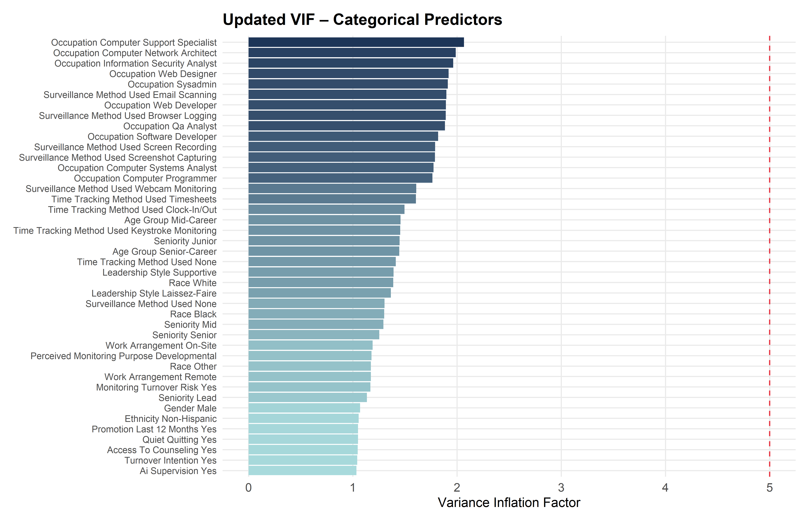
Distribution & Risk Imbalance Analysis
This section evaluates imbalance and asymmetry across both numeric and categorical variables.
The focus is on:
- Identifying skewed numeric distributions
- Detecting dominant categories in workforce composition
- Assessing whether these patterns may influence model behavior
These diagnostics help anticipate where transformations, resampling, or algorithm choice may matter during predictive modeling.
Numeric Variable Skewness
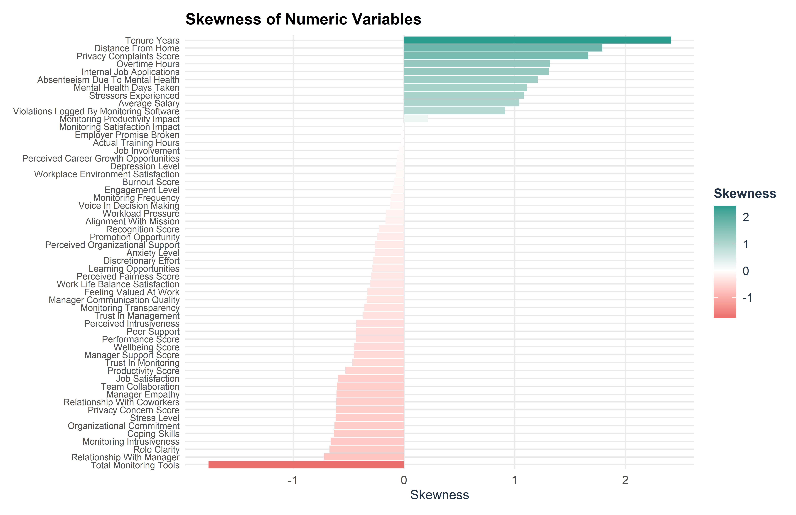
📊 Key Takeaways
Several behavioral workforce variables (e.g., overtime hours, absenteeism, and mental health days taken) exhibit right-skewed distributions, indicating that extreme outcomes are concentrated among a smaller subset of employees.
This pattern reflects realistic organizational dynamics, where most employees operate within typical ranges while a smaller group experiences elevated workload, stress, or disengagement.
From a modeling perspective, these distributions may benefit from transformation or robust modeling approaches, particularly when using regression-based techniques.
Dominant Category Proportion
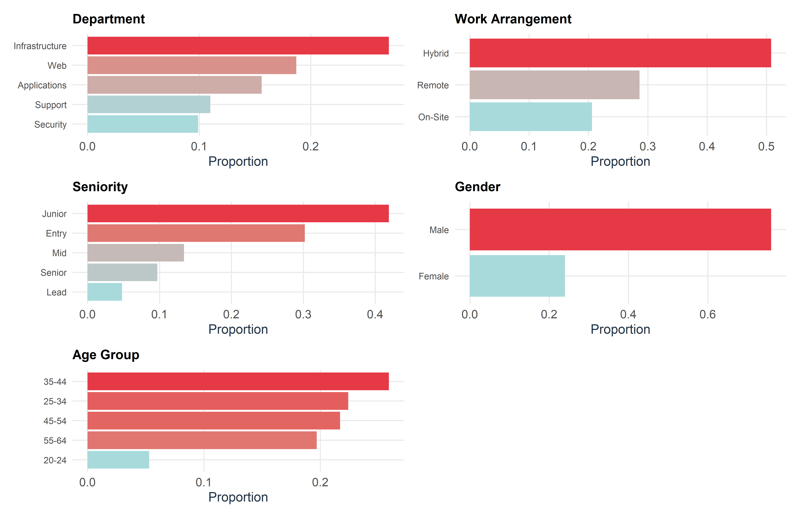
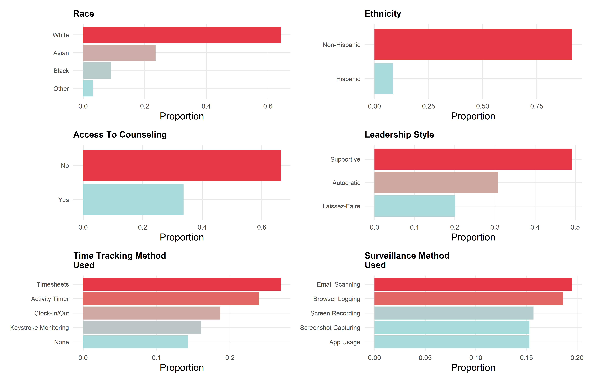
📊 Key Takeaways
Several categorical variables exhibit moderate class imbalance, with dominant categories representing a large share of employees. This reflects realistic workforce composition rather than data issues.
From a modeling perspective, imbalance may affect classification performance, making metrics such as precision, recall, and F1-score more informative than accuracy alone. Techniques such as resampling or class weighting may be considered if imbalance impacts results.
Key Observations from Exploratory Analysis
The exploratory analysis reveals several consistent patterns in the synthetic workforce dataset:
- Many continuous workforce measures are right-skewed, indicating that extreme experiences such as high overtime, elevated absenteeism, or longer tenure are concentrated among smaller subsets of employees.
- Likert-style variables show meaningful spread, especially across engagement, satisfaction, and support-related constructs, providing useful behavioral signal.
- Correlation patterns are generally weak to moderate, which supports model stability while still revealing coherent clusters such as salary-tenure and mental health-related measures.
- Monitoring and privacy variables show interpretable distributional differences, suggesting that surveillance-related constructs are meaningfully connected to employee sentiment and risk.
- Categorical imbalance is present in several workforce descriptors, but it reflects plausible organizational composition rather than structural failure in the dataset.
Overall, the EDA supports the view that the dataset is both behaviorally realistic and analytically useful for predictive modeling.
Diagnostic Summary
The exploratory analysis evaluated the dataset from several diagnostic perspectives, including distribution shape, pairwise relationships, multicollinearity, and imbalance.
The summary below highlights the main findings and their implications for the modeling phase.
| Summary of Exploratory Diagnostics | ||
| Key structural findings and their impact on predictive modeling | ||
| Diagnostic Area | Key Findings | Modeling Implications |
|---|---|---|
| Correlation Structure | Most predictors display weak pairwise relationships; strongest signal observed between salary and tenure. | Low correlation enhances model stability and reduces overfitting risk. |
| Numeric Multicollinearity | Variance Inflation Factors remain below critical thresholds, indicating minimal redundancy among numeric predictors. | Numeric features can be confidently retained without dimensionality reduction. |
| Categorical Multicollinearity | Initial categorical encoding introduced redundancy, requiring feature refinement. | Refined encoding improves model robustness and interpretability. |
| Numeric Distribution Shape | Behavioral variables (e.g., overtime, absenteeism) exhibit right-skewed distributions. | Tree-based models are well-suited to handle skewed feature distributions. |
| Categorical Class Balance | Certain categorical features display dominant class imbalance. | Evaluation strategy should prioritize imbalance-aware metrics (Recall, F1 Score). |
Transition to Predictive Modeling
The exploratory analysis indicates that the synthetic workforce dataset is suitable for predictive modeling and captures several realistic organizational patterns.
Key continuous variables show meaningful variability, behavioral indicators exhibit plausible skewness, and the overall predictor set remains structurally stable despite a few localized relationships. After minor feature engineering adjustments—most notably the simplification of age-group encoding—the dataset provides a balanced combination of realism, signal, and interpretability.
The next stage focuses on building and evaluating machine learning models for three workforce outcomes:
- Turnover Intention
- Quiet Quitting
- Monitoring-Related Turnover Risk
Because class balance and predictor behavior differ across outcomes, later model evaluation will emphasize not only overall accuracy, but also recall, specificity, F1 score, and ROC-AUC where appropriate.
Strategic Takeaways
This exploratory analysis confirms that the synthetic workforce dataset captures realistic behavioral and organizational patterns commonly observed in workforce settings.
Several strategic insights emerge:
- Workforce behavior is not evenly distributed; extreme outcomes such as high overtime, absenteeism, and elevated strain are concentrated within smaller employee segments.
- Employee perception variables show meaningful variation, providing strong behavioral signal for later predictive modeling.
- Mental health indicators form a coherent cluster, reinforcing their likely importance in understanding turnover and disengagement risk.
- Monitoring and privacy-related variables demonstrate measurable relationships with employee sentiment, making them analytically relevant rather than merely contextual.
- Most variable relationships are moderate rather than strong, which makes the dataset feel more realistic and reduces the risk of over-engineered predictor structure.
From a modeling perspective, the dataset is:
- Structurally stable
- Behaviorally realistic
- Informative without excessive redundancy
Taken together, these findings position the dataset well for the next phase of machine learning model development and evaluation.
Summary of Key Findings
The exploratory diagnostics indicate that the dataset is structurally suitable for predictive modeling, with limited overall multicollinearity and meaningful behavioral variation across key workforce measures.
- Strongest numeric correlation: Tenure Years and Average Salary (r = 0.63)
- Highest absolute skewness: Tenure Years (skew = 2.41)
- Maximum numeric VIF: 1.72, indicating acceptable multicollinearity for numeric predictors
Overall, the exploratory analysis confirms that the dataset is suitable for predictive modeling. The target variables show meaningful variation, predictor distributions are usable after preprocessing, and the relationship patterns support a multi-model classification approach rather than reliance on a single explanatory variable.